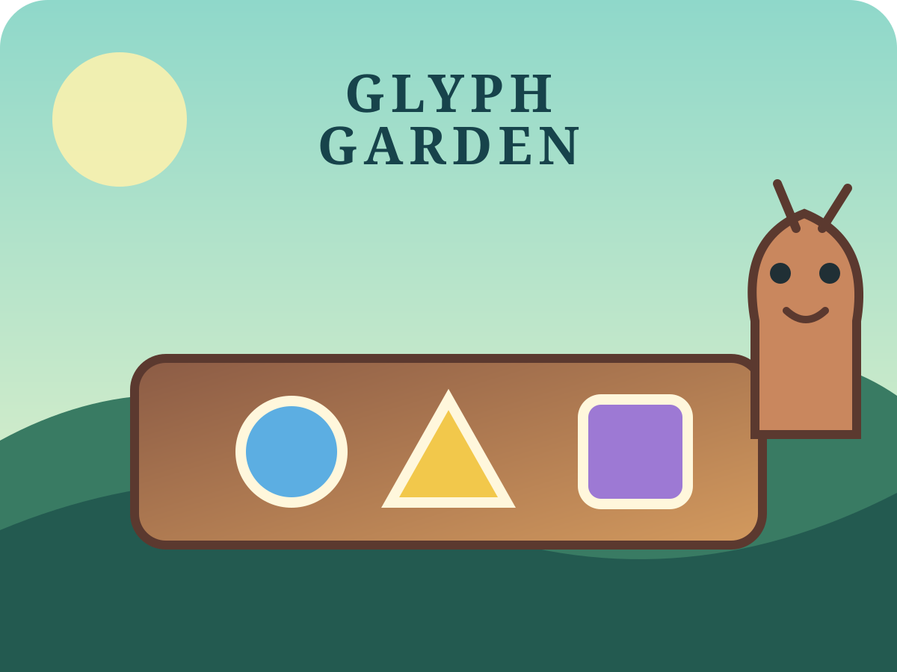

Mosslight garden
Glyph Garden
Match each garden request by finding the one tile with both the right shape and colour.
3 gentle plotsShape + colourCalm retry
WeightPlay Original Game Guide
Glyph Garden Guide
Read the request, choose the tile with both matching clues, and plant three plots at your own pace.
How to Play
- Open a plot and read its shape-and-colour request.
- Select one tile, then plant it to see truthful feedback.
- Use the result controls to continue, replay, or choose another plot.
Rules and Controls
Every plot has one exact match. Touch, mouse, Enter, and Space activate the same visible buttons. A wrong tile is safe to retry.
Strategy Tips
- Compare shape and colour together rather than chasing one clue.
- Clear a choice when you want to reconsider it.
- Replay any solved plot to practice without a timer.
Player and Save Information
Progress and best checks are stored only in this browser. The game is free, has no account requirement, and does not present a formal ability test.
Frequently Asked Questions
- How many plots are there?
- Three authored plots, each with one exact shape-and-colour match.
- What happens after a wrong choice?
- A clear message explains that one clue is mixed up, and you can choose another tile.
- Can I change language?
- Yes. Open Settings on Main and choose any of the thirteen supported locales.